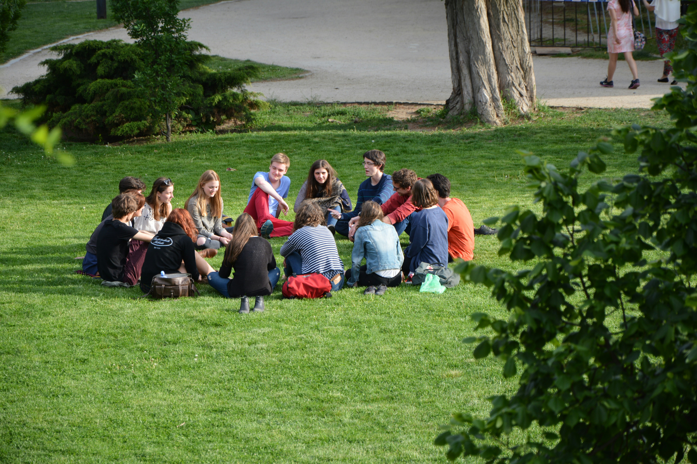

Behavioral Guide
This section outlines the principles and guidelines for designing user interactions that effectively influence user behavior in a positive manner. The goal is to create an engaging and intuitive experience that encourages desired actions while respecting user autonomy.
Website's Identity and Tone
Our website is built to be a reliable and connected space for international students. We understand that students seek trustworthy information to navigate their journey abroad, as well as a welcoming platform to connect with global peers. By combining official articles with community-driven threads that share personal experiences and diverse perspectives, we aim to create a semi-formal environment that is both informative and engaging.
Example of Homepage Text
Welcome to Bulu Space
Whether you're preparing to study abroad or already navigating life in a new country, this platform is here to support you every step of the way. You'll find reliable resources from universities, immigration offices, and student support services, alongside real stories and advice from fellow international students around the world. Our interactive threads offer a space to ask questions, share experiences, and build meaningful connections. We believe that informed students make empowered decisions — and that shared experiences make the journey more meaningful. Start exploring articles, join discussions, or connect with others who’ve walked the same path. If you’re new here, check out our guides to visas, housing, and cultural adaptation. Let’s make your international journey smoother, together.
Example of Homepage Imagery
- 1. Hero Image: The Discussion of Multiracial Students
- 
The hero image features a group of diverse students engaged in a lively discussion, symbolizing the platform's commitment to connectivity and community.
- 2. Infographic Banner: International Student Journey
The infographic banner illustrates the various stages of an international student's journey, from application to graduation, highlighting the platform's role in providing support and resources throughout this process.
- 3. Community Carousel: International Student Events
-

The community carousel showcases images from various international student events, fostering a sense of belonging and encouraging users to participate in community activities. It will support connectivity as highlights diversity, friendship, and shared joy.
Links
Links are styled to be easily identifiable and accessible.

Menu and Navigation
The navigation menu is designed to be simple and intuitive, allowing users to easily find and access different sections of the website.

Card Component
Cards are used to present information in a concise and visually appealing manner. They are designed to be interactive, encouraging users to click for more details.

Buttons
Buttons are designed to be easily recognizable and actionable. Different styles are used to indicate primary actions, secondary actions, and disabled states.
This is an example of Call-to-action button. I put primary button that has solid color, and secondari button that is transparent and only has outline. It has clear label to support clarity.
This is an example of button that is disabled. Users wont be able to click into it. I also set the cursor to be not-allowed when hovering over the button.
This is an example of icon-only button that is accessible for people with reading difficulties
Forms and Input Fields
Forms are designed to be user-friendly, with clear labels and instructions. Validation messages are provided to guide users in correcting errors.
- - Semi-formal tone balances professionalism (for official articles) with warmth (for community threads).
- - Phrases like “trusted space,” “real stories,” and “let’s make your journey smoother, together” build emotional trust while maintaining clarity and credibility.
- - Clear calls to action like “Start exploring” and “Check out our guides” encourage interaction without being overly casual.
- - Campus group photo: Builds trust and relatability by showing real students in authentic settings.
- - Infographic banner: Reinforces reliability through structured, digestible information.
- - Community carousel: Highlights interactivity and inclusiveness, showing students actively engaging.